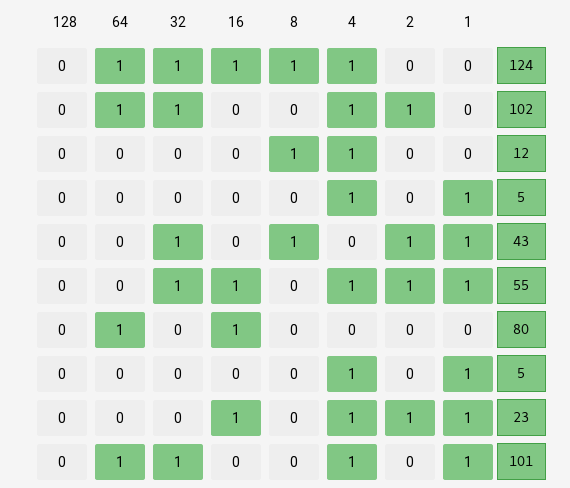
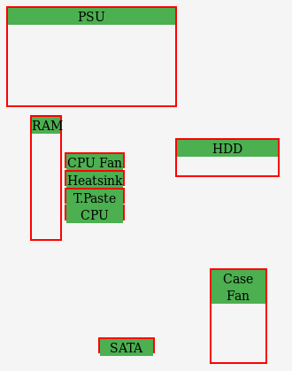
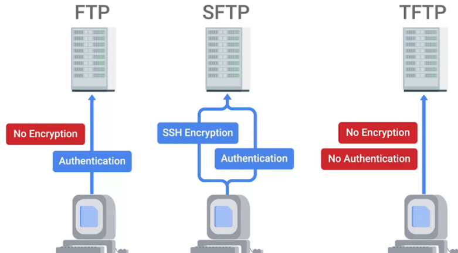

$ dpkg -s firefox
$ dpkg -s vlc
$ dpkg -s gimpIT Professions
Table of Contents
十进制和二进制转换

硬件基础
| 名称 | 说明 |
|---|---|
EDB(External Data Bus) |
interconnect the parts of computer, 8 bits, 16 bits, 32 bits and 64 bits. CPU recieve voltage singals throw EDB. |
Register |
Inside the CPU, store the Data that CPU work with |
MCC(Memory Controller Chip) |
The bridge between CPU and RAM |
Address Bus |
Connect the CPU and MCC |
Overclocking |
Increases the rate of CPU clock cycles in order to perform more tasks. |
CPU |
2 major types of CPU sockets: Land grid array(LGA), Pin grid array(PGA). 32-bit and 64-bit CPU architecture. |
RAM |
Computer short-term memory. |
Motherboards |
The foundation that holds computer together. |

Window 装机基础软件
-
Mozilla Firefox - https://www.mozilla.org/en-US/firefox/new/
-
VLC Media Player - https://www.videolan.org/vlc/download-windows.html
-
GIMP
ubuntu 基本命令
查看某包是否存在
系统更新
$ sudo apt-get update && sudo apt-get install -f安装包
$ sudo apt-get install firefox移除包
$ sudo apt-get remove gimpWhat is The Cloud?
-
The cloud is the future.
定义： - Cloud computing is a technological approach where computing resources are provisioned in a shareable way so that lots of users get what they need when they need it.
核心技术： - Hardware virtualization is a core concept of how cloud computing technologies work. It allows the concept of a physical machine and a logical machine to be abstracted away from each other.
-
Virtualization - A single physical machine called a host could run many individual virtual instances called guests.
-
Hypervisor - A hypervisor is a piece of software that runs and manages virtual machines while also offering these guests a virtual operating platform that’s indistinguishable from actual hardware.
-
Public cloud - A large cluster of machines run by another company.
-
Private cloud - A private cloud takes the same concepts of public cloud, but instead, it’s entirely used by a single large corporation and generally physically hosted on its own premises.
-
Hybrid cloud - A term used to describe situations where companies might run things like their most sensitive proprietary technologies on a private cloud while entrusting their less sensitive servers to a public cloud.
Cloud Computing: A new model in computing where large clusters of machines let us use the total resources available in a better way.
Windowns Powershell
查看某文件权限
> ICACLS C:\Users\Qwiklab\Documents\important_document
C:\Users\Qwiklab\Documents\important_document WINDOWS-INSTANC\Kara:(R,W)
NT AUTHORITY\SYSTEM:(I)(F)
BUILTIN\Administrators:(I)(F)
BUILTIN\Users:(I)(RX)
Everyone:(I)(RX)
Successfully processed 1 files; Failed processing 0 files修改某用户基于某一文件的权限
> ICACLS C:\Users\Qwiklab\Documents\important_document /remove "Kara"
> ICACLS C:\Users\Qwiklab\Documents\important_document
> ICACLS C:\Users\Qwiklab\Documents\important_document /grant "Kara:(r)"给用户分配读写文件权限
ICACLS C:\Users\Qwiklab\Secret\ /grant "Phoebe:(r)"
ICACLS C:\Users\Qwiklab\Secret\ /grant "Kara:(w)"修给组权限
ICACLS C:\Users\Qwiklab\Music\ /remove "Everyone"
ICACLS C:\Users\Qwiklab\Music\ /grant "Everyone:(r)"Chocolatey 管理 Windows 系统软件包
安装 Chocolatey
Unregister-PackageSource -Name chocolatey
Register-PackageSource -Name chocolatey -ProviderName Chocolatey -Location http://chocolatey.org/api/v2/Chocolatey 安装包
Install-Package -Name vlc -Source chocolatey
Get-Package -Name vlcChocolatey 卸载包
Choco Uninstall GIMP
Get-PackageTypes of IT Infrastructure Services
-
IaaS(Infrastructure as a Service) providers give you pre-configured virtual machines that you can use just as if you had a physical server. links
-
NaaS(Networking as a Service) allows companies to offshore their networking services so that they don’t have to deal with the expensive networking hardware. Companies also won’t have to set up their own network security, manage their own routing, set up a WAN and private internets, and so on.
-
SaaS(Software as a Service) is the Cloud alternative to maintaining your own software.
-
PaaS(Platform as a Service) includes an entire platform that allows you to build code, store information in a database, and serve your application from a single platform. read more
-
DaaS(Directory as a Service) centralizes your organizations users and computers in one location so that you can add, update, and remove users and computers. Some popular directory services that you can set up are Windows Active Directory, OpenLDAP.
FTP, SFTP, TFTP

Open IM Protocol
XMPP(Extensible Messaging and Presence Protocol) which is an open source protocol used in instant messaging applications and social networking services. XMPP is even used in Internet of Things applications, among other things.
Pidgin and Padium is the application use the XMPP.